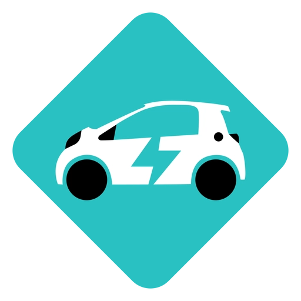
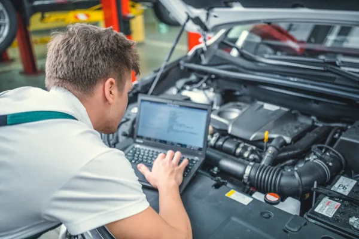
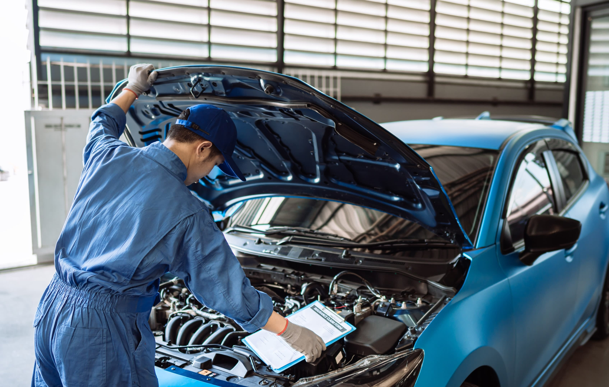
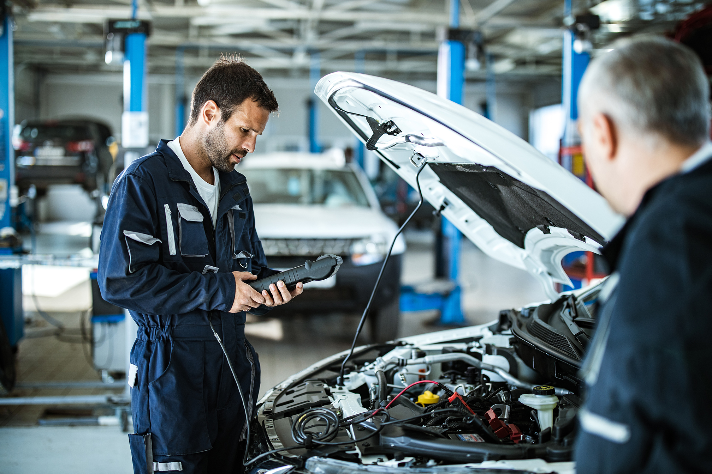
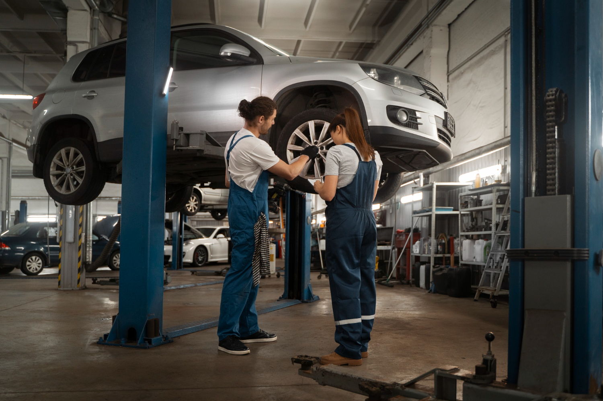
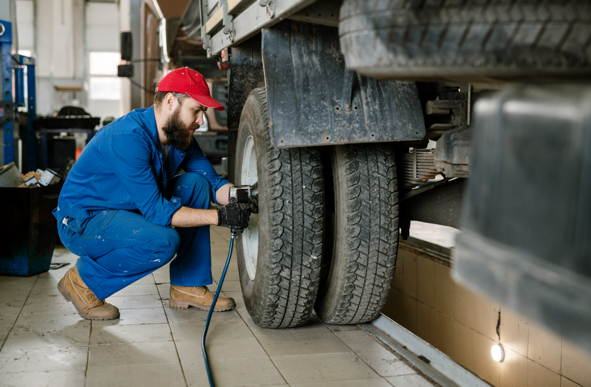

Brindar servicios mecánicos y electrónicos de calidad dentro del entorno universitario, permitiendo que los estudiantes desarrollen sus habilidades profesionales mediante la práctica real, bajo la supervisión de expertos, contribuyendo así a su formación integral.
Consolidarse como un taller mecánico universitario líder, reconocido por su innovación, compromiso educativo y excelencia en el servicio, formando profesionales altamente capacitados que aporten valor a la sociedad.
Este proyecto nace como una iniciativa estudiantil enfocada en unir la teoría con la práctica, creando un espacio donde los alumnos puedan aplicar sus conocimientos en situaciones reales. A través del trabajo colaborativo y la supervisión profesional, se busca ofrecer servicios accesibles a la comunidad universitaria mientras se fortalece la experiencia y preparación de los estudiantes.
Los Lobos Mecánicos comenzó como una idea entre estudiantes apasionados por la mecánica y la electrónica, que buscaban un espacio donde aprender más allá del aula. Con el tiempo, ese pequeño grupo se convirtió en un taller funcional, donde cada integrante aporta sus conocimientos mientras adquiere experiencia real. Gracias al apoyo de profesores y mecánicos experimentados, el proyecto fue creciendo hasta ofrecer servicios a la comunidad universitaria, manteniendo siempre su esencia: aprender, mejorar y ayudar.

Diagnostico y revision parcial y completa del vehiculo.
Los cargos pueden variar dependiendo del diagnostico

Si eres estudiante universitario y necesitas hacer tus practicas
profesionales de mecancia o electronica
¡Ponte en contacto con nosotros!

Todos nuestros servicios son realizados y supervisados por personal experimentado y responsable. ¡Garantizando un servicio de calidad!